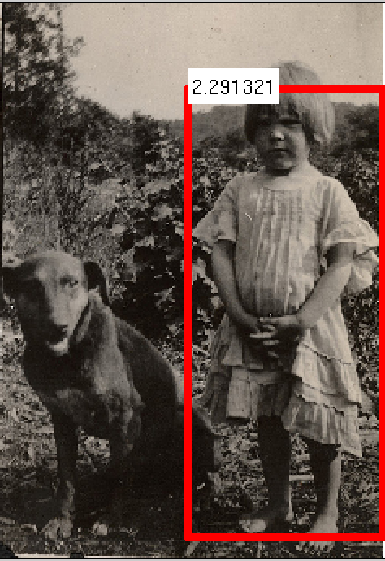
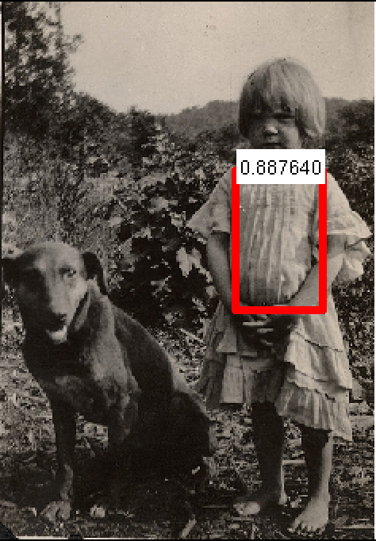
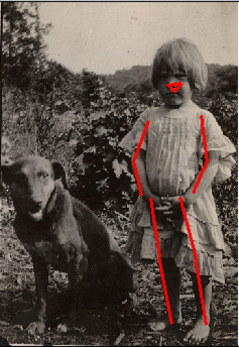

  
A k-poselet is a deformable part model (DPM) with k parts, where each of the parts is a poselet, aligned to a specific configuration of keypoints based on ground-truth annotations. A separate template is used to learn the appearance of each part. The parts are allowed to move with respect to each other with a deformation cost that is learned at training time. This model is richer than both the traditional version of poselets and DPMs. It enables a unified approach to person detection and keypoint prediction which, barring contemporaneous approaches based on CNN features, achieves state-of-the-art keypoint prediction while maintaining competitive detection performance
paper
You can download a complete implementation of k-poselets as described in the paper, along with demo code and pretrained models.
Source code and k-poselet models download: kposelets-release.tar.gz
The system is implemented in MATLAB, with helper functions written in C/C++ for efficiency reasons.
We also maintain a repository
on github.
You can download the dataset, as used in the paper.
Dataset download: dataset.tar.gz
When citing our system, please cite this work. The bibtex entry is provided below for your convenience.
@inproceedings{kposelets,
Author = {G. Gkioxari and B. Hariharan and R. Girshick and J. Malik},
Title = {Using k-poselets for detecting people and localizing their keypoints},
Booktitle = {CVPR},
Year = {2014}}
For any questions regarding the work or the implementation, contact the authors at gkioxari@eecs.berkeley.edu and bharath2@eecs.berkeley.edu